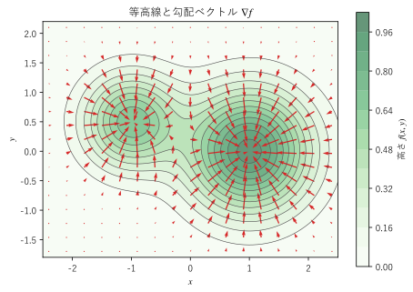
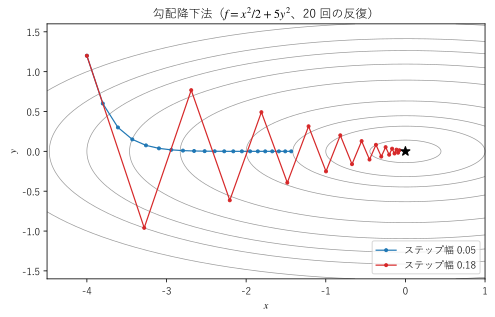

第 5 章 勾配
この章から第 9 章までは、場を微分する方法を扱う。最初に扱う勾配は、スカラー場が最も急に増える向きと、その増え方を表すベクトルである。この章では、勾配の定義と意味、方向微分、等値面との関係、ナブラ演算子を説明し、勾配降下法とポテンシャルへの応用を示す。
坂の向きとしての勾配
山の地図を思い浮かべる。地点 \((x, y)\) の高さを \(f(x, y)\) とすると、\(f\) は平面上のスカラー場であり、地図の等高線は \(f\) の値が等しい点を結んだ曲線である（第 4 章）。
ある地点に立って周りを見回すと、登り坂がいちばん急な向きが 1 つ決まる。その向きを持ち、長さが坂の急さ（水平に単位長さ進んだときの高さの増え方）に等しい矢印を、地図上の各点に描いたものが図 7 である（見やすくするため、矢印の長さは一定の割合で縮めている）。この矢印が、この章で扱う勾配（gradient）である。


図 7 2 つの山がある地形の等高線と勾配ベクトル
サンプルの全体：ch05_gradient_contour.py
図から次のことが読み取れる。
矢印は、どこでも等高線に垂直である。
矢印は、山頂に向かう登りの向きを指す。
等高線が密な（坂が急な）場所ほど矢印が長い。
山頂と、2 つの山の間の鞍部（峠）では、矢印の長さが 0 になる。
これらの性質が成り立つ理由を、以下で順に説明する。
勾配の定義
3 次元のスカラー場 \(f(x, y, z)\) の勾配を、3 つの偏導関数を成分とするベクトル場として定義する。
勾配は \(\operatorname{grad} f\) とも書く。2 次元のスカラー場 \(f(x, y)\) では、\(\nabla f = (\partial f / \partial x, \partial f / \partial y)\) である。スカラー場からベクトル場が作られる点に注意する。
たとえば \(f(x, y, z) = x^2 y + y z^3\) の勾配は
であり、点 \((1, 2, 1)\) では \(\nabla f = (4, 2, 6)\) となる。
工学でよく使う例として、原点からの距離 \(r = \sqrt{x^2 + y^2 + z^2}\) の勾配を求める。\(\partial r / \partial x = x / r\) などから
となる。これは原点から外へ向かう単位ベクトルである。距離が最も速く増えるのは原点から真っすぐ遠ざかる向きであり、その増え方は 1 であるから、直観にも合う。
方向微分
勾配が「最も急に増える向き」を表す理由を説明するため、任意の向きへの変化率を考える。点 \(\bm{p}\) から単位ベクトル \(\bm{u}\) の向きに距離 \(t\) だけ進んだ点での値を \(f(\bm{p} + t\bm{u})\) とする。この関数を \(t\) で微分した
を、\(\bm{u}\) の向きの方向微分という。\(\bm{u} = \bm{e}_x\) なら、方向微分は偏微分 \(\partial f / \partial x\) そのものである。方向微分は、偏微分を任意の向きに一般化したものといえる。
\(\bm{u} = (u_x, u_y, u_z)\) とすると、\(f(\bm{p} + t\bm{u})\) は \(x = p_x + t u_x\) などを \(f\) に代入した 1 変数関数なので、連鎖律（第 4 章）から
が得られる。どの向きの変化率も、勾配との内積で計算できる。
\(\nabla f\) と \(\bm{u}\) のなす角を \(\theta\) とすると、\(|\bm{u}| = 1\) なので
である。この式から、勾配の意味がすべて分かる。
\(\theta = 0\)、つまり \(\bm{u}\) が勾配と同じ向きのとき、方向微分は最大値 \(|\nabla f|\) をとる。勾配の向きは \(f\) が最も急に増える向きであり、勾配の大きさはその向きの変化率である。
\(\theta = \pi\) のとき、方向微分は最小値 \(-|\nabla f|\) をとる。\(-\nabla f\) の向きは \(f\) が最も急に減る向きである。
\(\theta = \pi / 2\) のとき、方向微分は 0 である。勾配に垂直な向きには、\(f\) は（1 次の近似では）変化しない。
なお、(6) の \(\bm{u}\) は単位ベクトルでなければならない。長さ \(|\bm{a}|\) のベクトル \(\bm{a}\) を使って \(\nabla f \cdot \bm{a}\) を計算すると、変化率の \(|\bm{a}|\) 倍になる。
\(f(x, y) = x^2 y\) の点 \((1, 2)\) での方向微分を、いくつかの向きで計算して確かめる。勾配は \(\nabla f = (2xy, x^2) = (4, 1)\)、大きさは \(\sqrt{17} \approx 4.123\) である。\(\bm{u} = (\cos\alpha, \sin\alpha)\) として、\(\nabla f \cdot \bm{u}\) と、中心差分 \((f(\bm{p} + h\bm{u}) - f(\bm{p} - h\bm{u})) / (2h)\) による近似値を比べる。
13def report() -> None:
14 """f(x, y) = x^2 y の点 (1, 2) での方向微分を、いくつかの向きで計算する."""
15 x, y = sp.symbols("x y")
16 f = x**2 * y
17 grad = [sp.diff(f, x), sp.diff(f, y)]
18 p = {x: 1, y: 2}
19 gx = float(grad[0].subs(p))
20 gy = float(grad[1].subs(p))
21 print(f"grad f = ({grad[0]}, {grad[1]})")
22 print(f"grad f(1, 2) = ({gx:.6f}, {gy:.6f}), |grad f| = {math.hypot(gx, gy):.6f}")
23 print()
24
25 f_num = sp.lambdify((x, y), f)
26 h = 1.0e-6
27 steepest = math.degrees(math.atan2(gy, gx)) # 勾配の向きの角度
28 print("角度[度] 内積 grad f . u 差分による近似")
29 for degree in (0.0, steepest, 45.0, 90.0, steepest + 90.0, 180.0):
30 theta = math.radians(degree)
31 ux, uy = math.cos(theta), math.sin(theta) # 単位ベクトル u
32 by_gradient = gx * ux + gy * uy
33 # 中心差分 (f(p + h u) - f(p - h u)) / (2h)
34 by_difference = (f_num(1 + h * ux, 2 + h * uy) - f_num(1 - h * ux, 2 - h * uy)) / (2 * h)
35 # round() と + 0.0 で、-0.000000 と表示されるのを防ぐ
36 print(f"{degree:9.3f} {round(by_gradient, 6) + 0.0:15.6f} {round(by_difference, 6) + 0.0:15.6f}")
grad f = (2*x*y, x**2)
grad f(1, 2) = (4.000000, 1.000000), |grad f| = 4.123106
角度[度] 内積 grad f . u 差分による近似
0.000 4.000000 4.000000
14.036 4.123106 4.123106
45.000 3.535534 3.535534
90.000 1.000000 1.000000
104.036 0.000000 0.000000
180.000 -4.000000 -4.000000
2 つの値はよく一致する。勾配の向き（約 14.036 度）で方向微分は最大値 \(\sqrt{17}\) をとり、そこから 90 度回った向き（約 104.036 度）では 0 になる。180 度の向き（\(x\) 軸の負の向き）では、勾配と鈍角をなすので負の値になる。
サンプルの全体：ch05_directional.py
勾配と等値面
図 7 で勾配が等高線に垂直だったことを示す。3 次元では、\(f\) の値が一定 \(c\) となる点の集まり \(f(x, y, z) = c\) は曲面になり、これを等値面という（第 4 章）。2 次元の等高線は、等値面の 2 次元版である。
等値面の上を通る任意の曲線 \(\bm{r}(t)\) を考える。曲線の上では常に \(f(\bm{r}(t)) = c\) なので、\(t\) で微分すると連鎖律から
となる。\(d\bm{r}/dt\) は曲線の接線ベクトル（第 3 章）なので、勾配は等値面上のあらゆる曲線の接線ベクトルと直交する。つまり、\(\nabla f \neq \bm{0}\) である点では、\(\nabla f\) は等値面の法線ベクトルである。
この性質から、曲面 \(f(x, y, z) = c\) の点 \(\bm{p}\) での接平面の方程式が
と求まる。\(\bm{r} = (x, y, z)\) は接平面上の点である。
例として、楕円体 \(x^2/4 + y^2 + z^2/9 = 3\) の点 \((2, 1, 3)\) での接平面を求める。\(f = x^2/4 + y^2 + z^2/9\) とすると \(\nabla f = (x/2, \ 2y, \ 2z/9)\) であり、点 \((2, 1, 3)\) では \((1, 2, 2/3)\) である。接平面は
となる。球面 \(x^2 + y^2 + z^2 = R^2\) では \(\nabla f = 2\bm{r}\) となり、法線が中心から外へ向かうという、よく知られた結果が得られる。
曲面を \(f(x, y, z) = c\) の形（陰関数）で表しておけば、勾配を計算するだけで法線ベクトルが求まる。この性質は CG で曲面に陰影を付けるときに使われる（第 18 章）。
全微分と 1 次近似
第 4 章の全微分は、勾配を使うと内積で書ける。
ここで \(d\bm{r} = (dx, dy, dz)\) は位置の微小な変化である。これを近似式として書くと
となる。1 変数の 1 次近似 \(f(x + \Delta x) \approx f(x) + f'(x) \Delta x\) で、導関数 \(f'\) の役割を勾配 \(\nabla f\) が果たしている。勾配は、多変数関数の「導関数」にあたるベクトルである。逆に、すべての微小な変化 \(d\bm{r}\) に対して \(df = \bm{g} \cdot d\bm{r}\) を満たすベクトル \(\bm{g}\) は勾配に限られる。この見方は、直交座標以外の座標系で勾配を求めるときに使う（第 9 章）。
ナブラ演算子
勾配の定義 (5) は、次の演算子を \(f\) に掛けた形をしている。
この記号 \(\nabla\) をナブラ（nabla）という。ナブラは、成分が偏微分の操作であるベクトルのようなものであり、ベクトル微分演算子と呼ばれる。ナブラ自体は値を持たず、右側にある場に作用して初めて意味を持つ。
ナブラをベクトルのように扱うと、ベクトルの 3 つの積に対応して 3 つの微分ができる。
演算 |
式 |
作用する場と結果 |
対応するベクトルの積 |
扱う章 |
|---|---|---|---|---|
勾配 |
\(\nabla f\) |
スカラー場からベクトル場 |
スカラー倍 |
この章 |
発散 |
\(\nabla \cdot \bm{F}\) |
ベクトル場からスカラー場 |
内積 |
|
回転 |
\(\nabla \times \bm{F}\) |
ベクトル場からベクトル場 |
外積 |
ただし、ナブラは普通のベクトルとは違い、順序を入れ替えられない。\(\nabla f\) はベクトル場だが、\(f \nabla\) は場に作用する前の演算子のままである。ナブラを含む式を変形するときは、「どの場に微分が作用しているか」を常に意識する必要がある（第 8 章）。
勾配の計算規則
勾配は偏微分を並べたものなので、1 変数の微分の規則がそのまま成り立つ。\(f, g\) をスカラー場、\(a, b\) を定数、\(h\) を 1 変数関数とする。
3 番目の式は連鎖律である。たとえば \(r^n\) の勾配は、\(h(r) = r^n\) と \(\nabla r = \bm{r}/r\) から
となる。\(n = -1\) とすると \(\nabla (1/r) = -\bm{r}/r^3\) であり、これは点電荷の電位や万有引力のポテンシャルの勾配として何度も登場する。
応用：勾配降下法
関数の最小値を数値的に求める方法の 1 つに勾配降下法がある。\(-\nabla f\) が \(f\) の最も急に減る向きであることを使い、現在の点から少しずつ坂を下る。
\(\eta > 0\) はステップ幅（機械学習では学習率）と呼ばれる定数である。機械学習では、\(f\) を誤差（損失関数）、\(\bm{p}\) をモデルのパラメーターとして、この反復でパラメーターを調整する。
\(f(x, y) = x^2/2 + 5y^2\) の最小点（原点）を、点 \((-4, 1.2)\) から探した結果を図 8 に示す。
24def gradient_descent(start: NDArray[np.float64], step: float, n_iter: int) -> NDArray[np.float64]:
25 """p_{k+1} = p_k - step * grad f(p_k) を n_iter 回繰り返し、通った点を (n_iter + 1) 行 2 列で返す."""
26 points = [start]
27 p = start
28 for _ in range(n_iter):
29 p = p - step * grad_f(p)
30 points.append(p)
31 return np.array(points)


図 8 ステップ幅による勾配降下法の進み方の違い
\(\nabla f = (x, 10y)\) なので、1 回の反復で \(x\) は \((1 - \eta)\) 倍、\(y\) は \((1 - 10\eta)\) 倍になる。
\(\eta = 0.05\) では \(y\) は速く 0 に近づくが、\(x\) は 1 回に 0.95 倍にしかならず、20 回では最小点に届かない。
\(\eta = 0.18\) では \(y\) が 1 回ごとに \(-0.8\) 倍になり、谷を横切るようにジグザグに進む。
\(\eta \ge 0.2\) では \(|1 - 10\eta| \ge 1\) となり、\(y\) は 0 に近づかない（\(\eta > 0.2\) では発散する）。
ジグザグが生じるのは、勾配が等高線に垂直であり、細長い等高線では最小点の方を向かないためである。勾配降下法は、勾配の「その場で最も急な向き」という性質が局所的なものであることをよく示している。
サンプルの全体：ch05_gradient_descent.py
応用：ポテンシャルと力
物理では、力を位置エネルギー（ポテンシャルエネルギー）\(U\) の勾配で表すことが多い。
負号は、力が位置エネルギーの減る向き（坂を下る向き）に働くことを表す。
地表近くの重力：\(U = mgz\) から \(\bm{F} = (0, 0, -mg)\) となる。
ばねの力：原点に固定したばね定数 \(k\) のばねでは \(U = kr^2/2\) であり、\(\nabla U = k r \nabla r = k\bm{r}\) から \(\bm{F} = -k\bm{r}\) となる。
スカラー 1 つで表される \(U\) から、3 つの成分を持つ力が勾配によって得られる。どのようなベクトル場がこの形に書けるか、また数学と物理で負号の付け方が異なる点は第 11 章で扱う。
この章のまとめ
スカラー場 \(f\) の勾配 \(\nabla f = (\partial f / \partial x, \partial f / \partial y, \partial f / \partial z)\) はベクトル場である。
単位ベクトル \(\bm{u}\) の向きの方向微分は \(\nabla f \cdot \bm{u}\) である。勾配の向きは \(f\) が最も急に増える向きで、大きさはその変化率である。
勾配は等値面（等高線）に垂直であり、陰関数で表した曲面の法線ベクトルになる。
全微分は \(df = \nabla f \cdot d\bm{r}\) と書け、勾配は多変数関数の導関数の役割を果たす。
ナブラ \(\nabla\) はベクトルのように扱える微分の演算子であり、勾配・発散・回転を統一的に表す。
勾配は、勾配降下法による最適化や、ポテンシャルから力を求める計算に使われる。